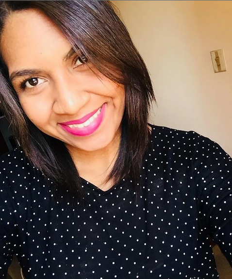
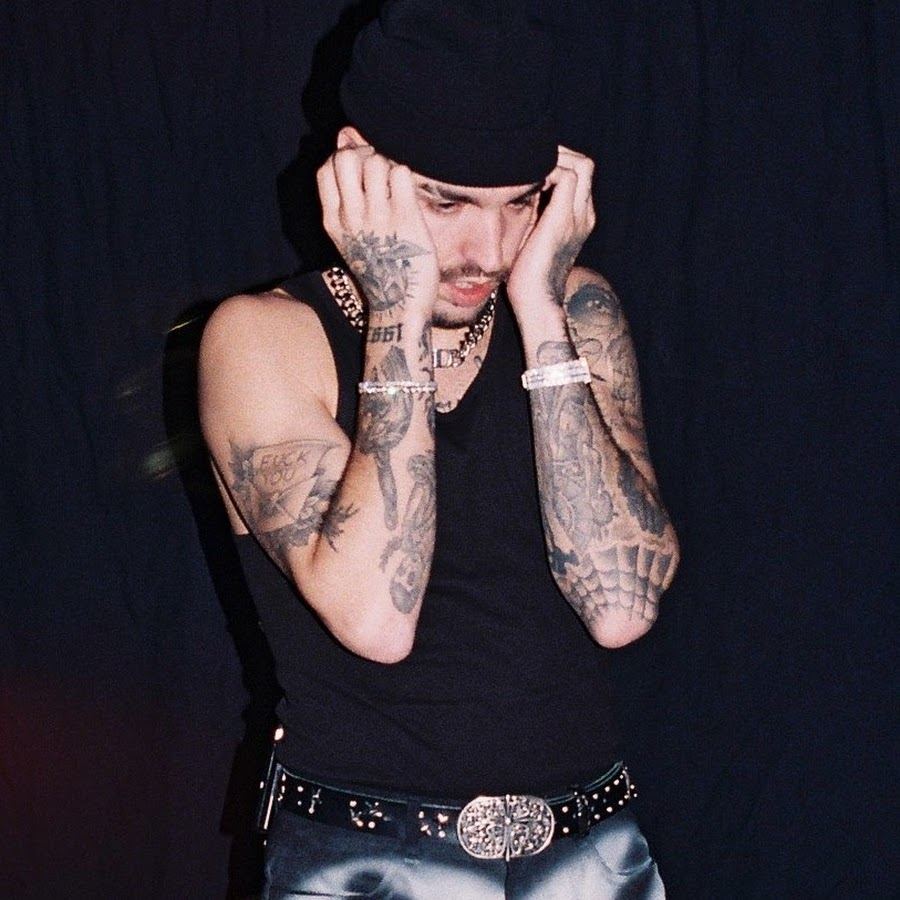

Nació un 6 de febrero de 1995. En el año 2018 se licenció en Estudios políticos y administrativos, con mención en Relaciones Internacionales, de la facultad Ciencias Jurídicas y Políticas, de la Universidad Central de Venezuela
Su camino como escritora comenzó entre los doce y trece años de edad. Primero como lectora, y luego como crítica en al menos, cinco historias diferentes. En ese momento tomó la decisión de iniciar su propia narrativa.
Ella afirma que sus primeros escritos podrían dar vergüenza, asegurando que el camino para llegar a su escritura actual fue largo y de gran aprendizaje.
Darlis Stefany, es la autora de diversos libros, además de las sagas BG.5, e InfoNews, sus libros están siendo publicados y distribuidos por Nova Casa Editorial y Editorial Planeta por el sello de Wattpad. En su perfil de Wattpad se pueden encontrar todas sus obras.
Acá te dejamos el link de su twitter @Darlis_Steff

Rels B, cuyo nombre real es Daniel Echavarría Oviedo, es un cantante, rapero y compositor español. Nació el 5 de diciembre de 1993 en Palma de Mallorca, Islas Baleares, España.
Desde joven, Rels B mostró un interés y talento por la música. Comenzó a escribir letras y a experimentar con el rap en su adolescencia. En 2013, lanzó su primer álbum independiente titulado "The Sixth Sense", que le dio cierta visibilidad en la escena musical underground de España.
Algunos de sus álbumes más destacados incluyen "Flakk Daniel's Lp" (2017), "Desde la frontera" (2018) y "Happy Birthday Flakko" (2019). Sus canciones suelen abordar temas personales, reflexiones sobre la vida, el amor y la superación.
Además de su carrera musical, Rels B también es conocido por su imagen distintiva, su estilo de vida relajado y su actitud positiva. Ha ganado popularidad en las redes sociales, especialmente en YouTube e Instagram, donde comparte contenido relacionado con su música, su día a día y su filosofía de vida.
Da click Aqui para dirigirte a su twitter.
